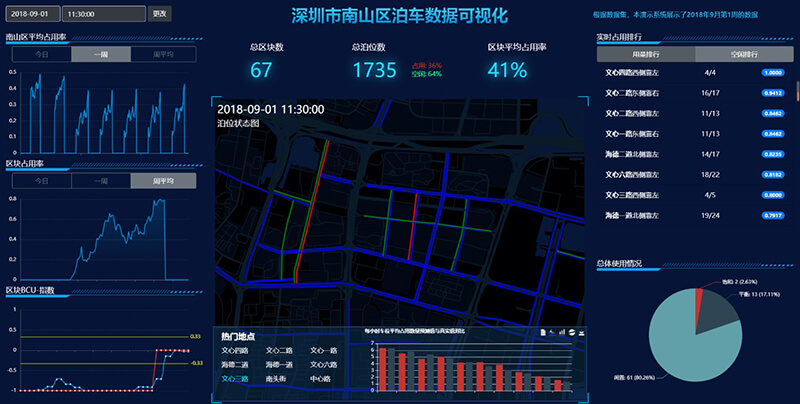
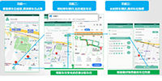
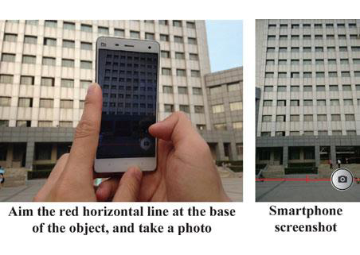
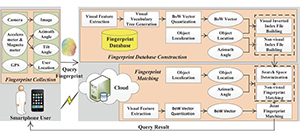
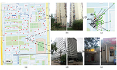
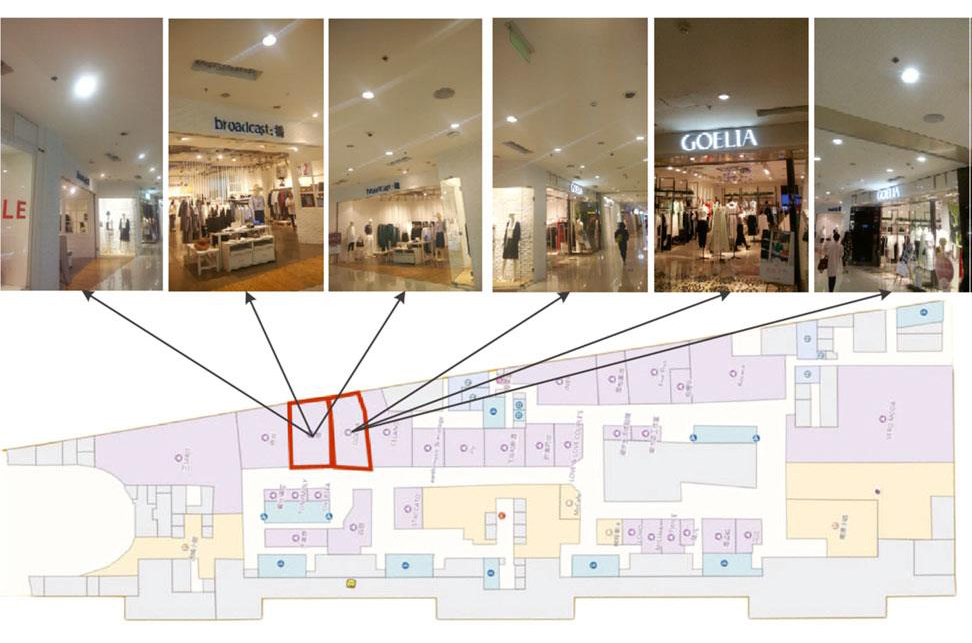
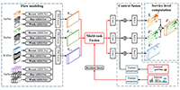
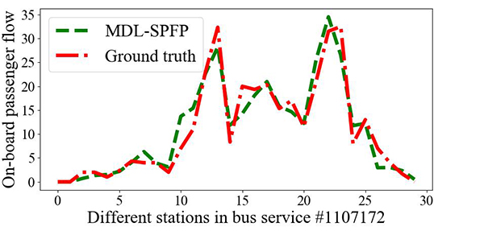
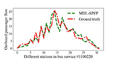

赵东
副教授，博士生导师智能通信软件与多媒体北京市重点实验室
北京邮电大学，计算机学院
办公地址: 北京市海淀区西土城路10号教三楼
办公电话: +86-10-62282767
Email: dzhao@bupt.edu.cn / zhaodong86@gmail.com
Google Scholar Citations|DBLP|English personal HomePage
个人简介
赵东，北京邮电大学计算机学院副教授，博士生导师。主要研究方向为物联网、移动感知、城市计算与大数据等。近5年来主持或参与国家自然科学基金、重点研发计划、企事业合作项目等10余项。在移动群智感知、城市感知计算等领域取得一系列创新性成果，在IEEE/ACM汇刊（TON/TPDS/TMC/TVT/THMS/TBD）、IEEE Communications Magazine、IEEE INFOCOM、ICME、GLOBECOM等国际著名期刊和会议发表论文40余篇，出版学术专著1本；目前谷歌学术累计被引用1200余次，2篇论文入选ESI高被引论文；获得中国计算机学会优博论文奖、ACM北京优博论文奖、国家教学成果二等奖、教育部自然科学一等奖、中国计算机学会自然科学一等奖、北京市教学成果一等奖等奖励和荣誉，入选第四届中国科协青年人才托举工程。目前是中国通信学会高级会员，中国计算机学会/IEEE/ACM会员；曾担任10余个国际著名会议（ACM MobiHoc、IEEE DCOSS/GLOBECOM/MASS等）程序委员/专题讨论会主席/宣传主席，以及10余个国际一流刊物（TON/TMC/TMM/TIST等）审稿人。
赵东，北京邮电大学计算机学院副教授，博士生导师。主要研究方向为物联网、移动感知、城市计算与大数据等。近5年来主持或参与国家自然科学基金、重点研发计划、企事业合作项目等10余项。在移动群智感知、城市感知计算等领域取得一系列创新性成果，在IEEE/ACM汇刊（TON/TPDS/TMC/TVT/THMS/TBD）、IEEE Communications Magazine、IEEE INFOCOM、ICME、GLOBECOM等国际著名期刊和会议发表论文40余篇，出版学术专著1本；目前谷歌学术累计被引用1200余次，2篇论文入选ESI高被引论文；获得中国计算机学会优博论文奖、ACM北京优博论文奖、国家教学成果二等奖、教育部自然科学一等奖、中国计算机学会自然科学一等奖、北京市教学成果一等奖等奖励和荣誉，入选第四届中国科协青年人才托举工程。目前是中国通信学会高级会员，中国计算机学会/IEEE/ACM会员；曾担任10余个国际著名会议（ACM MobiHoc、IEEE DCOSS/GLOBECOM/MASS等）程序委员/专题讨论会主席/宣传主席，以及10余个国际一流刊物（TON/TMC/TMM/TIST等）审稿人。
主要学习和工作经历
2014年7月在北京邮电大学获得计算机科学与技术专业博士学位（导师：马华东教授）。2012年10月至2013年10月，作为国家公派联合培养博士生在美国伊利诺伊理工大学计算机系从事访问研究（导师：李向阳教授）；2014年至今在北京邮电大学计算机学院任教；2014年7月至2016年7月在北京邮电大学信息与通信工程博士后流动站从事研究（合作导师：张平院士）；2019年9月至今作为国家公派访问学者在美国罗格斯大学计算机学院从事访问研究。
2014年7月在北京邮电大学获得计算机科学与技术专业博士学位（导师：马华东教授）。2012年10月至2013年10月，作为国家公派联合培养博士生在美国伊利诺伊理工大学计算机系从事访问研究（导师：李向阳教授）；2014年至今在北京邮电大学计算机学院任教；2014年7月至2016年7月在北京邮电大学信息与通信工程博士后流动站从事研究（合作导师：张平院士）；2019年9月至今作为国家公派访问学者在美国罗格斯大学计算机学院从事访问研究。
承担的主要科研项目
- 国家自然科学基金面上项目，“主被动结合的城市移动感知网络协同部署理论与方法研究”，2020.01-2023.12，主持
- 国家科技创新2030新一代人工智能重大项目，“面向城市感知的群智涌现机理与计算方法”，2019.12-2022.12，课题骨干（排名第2）
- 国家自然科学基金重点项目，“面向无人系统的网络协同理论与技术”，2018.01-2022.12，北邮课题负责人
- 国家自然科学基金重点国际合作项目，“智能感知网络及其在智慧城市中应用研究”，2018.01-2022.12，项目骨干（排名第4）
- 国家自然科学基金青年项目，“面向物联网搜索的群智感知关键技术研究”，2016.01-2018.12（已结题），主持
- 国家自然科学基金重点项目，“移动社交中感知数据收集的机会路由与交互式内容移交”，2014.01-2018.12（已结题），第3完成人
- 北京邮电大学青年科研创新计划专项，“群智感知网络中实用型激励机制设计及应用”，2017.01-2018.12（已结题），主持
- 中国博士后面上基金（一等资助），“群智感知网络中用户激励与隐私保护机制研究”，2014.10-2016.06（已结题），主持
- CCF-腾讯犀牛鸟创意基金，“基于群智感知的移动位置识别研究”，2015.11-2016.11（已结题），主持
- CCF-腾讯犀牛鸟科研基金，“移动社交中用户个性化激励方法研究”，2013.10-2016.09（已结题），第2完成人
代表论文
- 参考英文版
主要荣誉和奖励
- 2019年，深圳开放数据应用创新大赛数据创意赛道二等奖（全国第3名）
- 2018年，入选第四届中国科协青年人才托举工程
- 2018年，国家教学成果一等奖（排名第6）
- 2018年，ITNAC 2018 Highly Commended Paper Runner-up Award
- 2017年，教育部自然科学一等奖（排名第4）
- 2017年，中国计算机学会自然科学一等奖（排名第4）
- 2017年，北京市教学成果一等奖（排名第6）
- 2015年，中国计算机学会优博论文奖
- 2015年，ACM北京优博论文奖
- 2015年，CCF-腾讯犀牛鸟创意基金奖
- 2014年，A3 Annual Workshop Best Presentation Award
- 2014年，北京邮电大学优博论文奖
- 2013年，IEEE MASS Best Paper Runner-up Award
主要学术服务工作
[国际学术会议服务]
[担任以下国际会议期刊审稿人]
[国际学术会议服务]
- Publicity Chair of ACM MobiHoc 2020
- TPC Member of IEEE ICPADS 2019, IEEE MASS 2019, IEEE ICA3PP 2017, IEEE GLOBECOM 2016, IEEE DCOSS 2015
- Organizer and Chair of IEEE ICME'19 workshop on Multimedia for Robot, Unmanned Aerial Vehicle and Driverless Car (MRUD)
- TPC member of CISC 2019: The Second International Workshop on Crowd Intelligence for Smart Cities: Technology and Applications
- TPC member of CoWireless 2019: Workshop on Recent Advances in Wireless Coexistence for Heterogeneous IoT
- Organizer and Chair of the PCM 2016 special session “Leveraging Crowdsourced and User-generated Data for Multimedia Applications”
[担任以下国际会议期刊审稿人]
- IEEE/ACM Trans. on Networking, IEEE Trans. on Mobile Computing, IEEE Trans. on Parallel and Distributed Systems, IEEE Trans. on Wireless Communications, IEEE Trans. on Multimedia, IEEE Trans. on Vehicular Technology, IEEE Trans. on Human-Machine Systems, IEEE Trans. on Cybernetics, IEEE Trans. on Cloud Computing, IEEE Trans. on Services Computing, IEEE Trans. on Big Data, IEEE Journal on Selected Areas in Communications, IEEE Internet of Things Journal, IEEE Communications Magazine, IEEE Communications Letters, ACM Trans. on Sensor Networks, ACM Trans. on Intelligent Systems and Technology, ACM Trans. on Multimedia Computing, Communications, and Applications, Computer Networks, Ad Hoc Networks, Computer Communications, Wireless Networks
部分项目成果展示
-
“iSPark：大数据驱动的智能路内停车管理”，获得深圳开放数据应用创新大赛数据创意赛道二等奖（全国第3名）
该项目针对城市路内停车困难以及带来的交通、能源、环境等诸多问题，基于深圳宜停车、地图POI、交通路网、天气等数据，使用大数据和人工智能技术，提供包含停车位预测、预约及动态分配（推荐）、智能定价、可视化分析等功能为一体的综合解决方案，以手机APP和Web页面等形式为停车管理部门和普通停车用户提供服务，大幅提高城市路内停车管理水平，解决停车难、效率低等问题。   -
“CrowdOLR：基于群智感知的移动位置识别”，获得CCF-腾讯犀牛鸟创意基金奖
该项目结合移动计算、计算机视觉和图像检索等领域的相关方法，基于移动群智感知模式获取由位置图像和多种非视觉感知数据构成的动态位置指纹库，从特征提取融合、指纹库动态更新、信息匹配优化三个方面进行移动位置识别研究，改善识别效率、准确性与成本等多项性能指标，分别基于大学校园和商场两种场景构建移动位置识别原型系统进行应用验证。   -
MDL-SPFP：基于多任务深度学习的公交乘客流预测
谷歌地图在2019年6月27日公布了一项新功能，让通勤者可以看到他们通勤的公交车的拥挤情况。而这项功能的实现主要依靠采集大量的乘客拥挤度实时调查数据，不具有较好的推广性。为此，本项目首次基于公交刷卡数据实现了细粒度的公交乘客流预测，具有很高的预测准确性和可推广性。 
完整论文列表
[期刊]
[期刊]